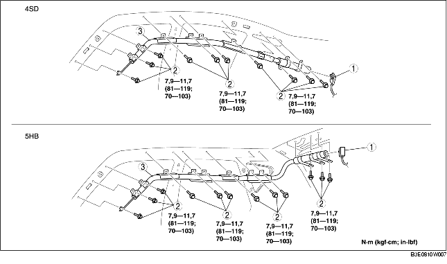

REMOCION/INSTALACION MODULO AIRBAG TIPO CORTINA
B3E081000171W01
-
Atención
-
• Un manejo impropio del módulo airbag puede ocasionar la explosión accidental del airbag con serio peligro para la seguridad personal. Consultar las advertencias y las precauciones de mantenimiento antes de manejar el módulo airbag. (Véase PRECAUCIONES DE MANTENIMIENTO). (Véase PRECAUCIONES DE MANTENIMIENTO).
1. Poner el conmutador de arranque en LOCK.
2. Desconectar el cable negativo de la batería y esperar durante 1 minuto o más.
3. Quitar los siguientes componentes:
-
(1) Consola (4SD) (Véase REMOCION/INSTALACION CONSOLA).
-
(2) Revestimiento montante A (Véase REMOCION/INSTALACION REVESTIMIENTO MONTANTE A).
-
(3) Guardatalón delantero (Véase REMOCION/INSTALACION GUARDATALON DELANTERO).
-
(4) Guardatalón trasero (Véase REMOCION/INSTALACION GUARDATALON TRASERO).
-
(5) Revestimiento inferior montante B (Véase REMOCION/INSTALACION REVESTIMIENTO INFERIOR MONTANTE B).
-
(6) Anclaje superior del cinturón de seguridad delantero (Véase REMOCION/INSTALACION CINTURONES DE SEGURIDAD DELANTEROS).
-
(7) Revestimiento superior montante B (Véase REMOCION/INSTALACION REVESTIMIENTO SUPERIOR MONTANTE B).
-
(8) Asiento trasero (Véase REMOCION/INSTALACION ASIENTO TRASERO).
-
(9) Revestimiento cárter de rueda (Véase REMOCION/INSTALACION REVESTIMIENTO CARTER DE RUEDA).
-
(10) Revestimiento superior lateral maletero (5HB) (Véase REMOCION/INSTALACION REVESTIMIENTO LATERAL MALETERO).
-
(11) Revestimiento montante C (Véase REMOCION/INSTALACION REVESTIMIENTO MONTANTE C).
-
(12) Luz de lectura (Véase REMOCION/INSTALACION LUZ DE LECTURA).
-
(13) Luz del habitáculo (Véase REMOCION/INSTALACION LUZ DEL HABITACULO).
-
(14) Parasol (Véase REMOCION/INSTALACION PARASOL).
-
(15) Manecilla de apoyo (Véase REMOCION/INSTALACION MANECILLA DE APOYO).
-
(16) Forro del techo (Véase REMOCION/INSTALACION FORRO DEL TECHO).
-
(17) Tampón amortiguador (Véase REMOCION/INSTALACION TAMPON AMORTIGUADOR).
4. Quitar según el orden indicado en la tabla.

|
1
|
Conector
|
|
2
|
Perno fileteado
|
|
3
|
Módulo airbag tipo cortina
|
5. Instalar en el orden contrario al de la remoción.
6. Con el conmutador de arranque en posición ON comprobar que la luz de aviso del sistema airbag se ilumine durante 6 segundos aproximadamente y luego se apague.
-
• Si la luz de aviso del sistema airbag no funciona normalmente, véase el sistema diagnóstico de a bordo (sistema airbag) y llevar a cabo el control del sistema.